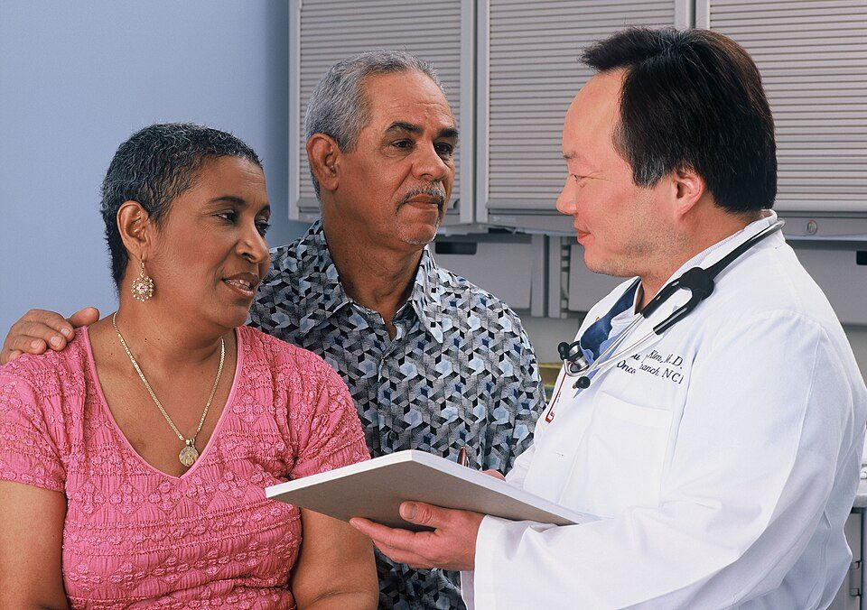

General information only. It does not replace advice from your care team and should not be used to choose a treatment.


What a shared decision is
In cancer there is often more than one reasonable option: operating or monitoring, more or less intensive treatment, one schedule or another. A shared decision means your team brings the evidence (benefits, risks, uncertainties) and you bring what matters to you (your values, priorities and circumstances). Together you choose.
Not everyone wants the same level of involvement, and that is fine. What matters is that you can say how much you want to take part.
How to take part
- Ask what the options are, including the option of doing nothing for now or of active surveillance.
- For each one: what can I gain, what are the risks, how likely is each thing ("out of 100 people like me, how many...").
- Say what matters most to you: living longer, avoiding certain side effects, working, being at home, a family event.
- Ask how much time you have to decide. In most cancers, a few days or weeks of thinking does not change the outcome.
- Ask for decision aids (written materials or tools) if they exist for your situation.
Informed consent
Before surgery, radiotherapy, chemotherapy or a clinical trial, you will be asked to sign an informed consent form. It is not a formality: you must receive understandable information about the aim, the risks and the alternatives, and you can ask anything before signing. You can also withdraw consent at any time. In Spain it is regulated by Law 41/2002 on patient autonomy.
A second opinion
Asking for a second opinion is a right and a common practice. A good team will not be offended. It makes particular sense if:
- The cancer is rare or the diagnosis is uncertain.
- You are offered surgery or a treatment with significant after-effects.
- There are very different options and you do not feel sure.
- You want to know whether there are clinical trials at another centre.
How to ask for one: - Several Spanish regions have a regulated second-opinion procedure in the public system: ask the patient service office at your hospital. In other countries, ask your oncologist or GP for a referral. - For rare cancers, Spain has national reference centres (CSUR); many countries have similar networks, such as the European Reference Networks. - You will need copies of your reports, the scan images and sometimes the pathology samples. - Many second opinions confirm the initial plan; that is reassuring too.
See also: Can I ask for a second opinion?, Clinical trials, Your first oncology appointment.
Sources
- Law 41/2002 on patient autonomy and rights regarding clinical information (Spain). boe.es
- Elwyn G, et al. Shared decision making: a model for clinical practice. J Gen Intern Med. 2012;27:1361-1367. doi:10.1007/s11606-012-2077-6
- Stiggelbout AM, et al. Shared decision making: really putting patients at the centre of healthcare. BMJ. 2012;344:e256. doi:10.1136/bmj.e256
- Ministry of Health (Spain). Reference centres, services and units (CSUR). sanidad.gob.es